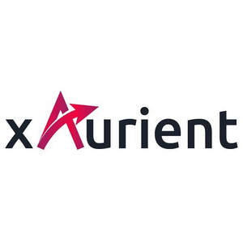

Trade Mark Journal No.2025/036 5 September 2025
UK00004253066 22 August 2025 (9,42)

The mark includes the colors of red gradient, purple gradient and black
- Class 9
- Application software for smartphones; computer hardware; computer hardware for integrated control of security functions to protect computer network against threat by computer virus, illegal access and others; computer software; computer utility software; computer software for firewall; computer software for data security of computers and other computer software; fittings for computer; computer software to prevent confidential information from leaking; computer software and electronic publications to provide information to users and to educate users in relation to computer and network security; computer software to monitor, report and perform the regulated compliance; computer software to backup and to restore data; computer hardware and software to protect and to enhance confidentiality of data; computer hardware and software to protect or to restore the perfect condition of data, computer, computer software, computer network; computer hardware and software to protect or to restore the effectiveness of data and the infrastructure of computers; electronic publications recorded in electronic circuits, magnetic disks, magnetic tapes, optical disks, magnetic-optical disks; other electronic publications; electrical communication machines and instruments; electronic circuits, magnetic disks, magnetic tapes, optical disks, magnetic-optical disks and other recording media recorded with computer programs; computer programs; other electronic machines, apparatus and their parts; consumer video game programs; electronic circuits and CD-ROMs recorded with programs for hand-held games with liquid crystal displays; exposed cinematographic films; exposed slide films; slide film mounts; recorded video discs and video tapes; downloadable image files via internet; computer software, recorded; cybersecurity software; computer security software; intrusion detection software; firewall software; anti-malware software; antivirus software; threat detection and response (XDR) software; computer security software for protection of vehicles, computers, computer networks, computer data, and vehicle security operations centers (VSOCs); vaccine software for computer virus; cloud computing software; none being for use in physical security systems for buildings and physical premises or for use with sensors for buildings and physical premises or cameras, or their parts and fittings.
- Class 42
- Provision of software in relation to computer, data, network security by SaaS provider; provision of computer program for platform construction for provision of SaaS application; providing on-line non-downloadable software for use in computer security, data security, network security; providing on-line non-downloadable software for monitoring, filtering and reporting of message/files/programs/data that were retrieved and received from computer and computer network; providing temporary use of non-downloadable software for data security of computer and electronic devices; providing on-line non-downloadable software for searching and reporting vulnerability of security of website; provision of internet search engines; technical advices and consultancy relating to design of computers, computer system, computer software, computers and communication networks; providing on-line non-downloadable software for retrieving computer data on computer and electronic devices destroyed or partially destroyed by computer virus; providing on-line non-downloadable software for computer data security; provision of computer program and information relating to computer viruses, including their varieties, special characteristics, tendencies, examples of invasion and infections, removal methods, preventative steps, methods for dealing with viruses; provision of temporary access to non-downloadable vaccine software for computer virus; research and analysis of computer virus (included what is performed by dispatch); provision of information relating to research and analysis of computer virus; advices relating to research and analysis of computer virus; update of pattern file for computer virus; update of other computer software; monitoring of server for extermination of computer virus and computer virus countermeasures including removal of computer virus (included what is performed by dispatch) and provision of information thereof; consultancy relating to design, creation, maintenance of computer program; provision of information relating to design, creation, maintenance of computer program; design, creation, maintenance of information processing system used computer; consultancy relating to design, creation, maintenance of information processing system used computer; provision of information relating to design, creation, maintenance of information processing system used computer; provision of information relating to computer bug or updating; information processing by computer; design of machines, apparatus, instruments (including their parts) or systems and facility composed of such machines, apparatus and instruments; technological advices and introduction about performance and operation procedures of computers, automobiles and industrial machines which need to have an advanced and technical knowledge/technology/experience to operate appropriately (technological advice relating to computers, automobiles and industrial machines); testing and research on computer programs; testing and research on machine and apparatus; provision of information about computer technology via website; provision of technological information about computer; consultancy and information services relating to information technology; provision of technological information about computer software via website; provision of technological information about computer software; computer security consultancy; updating of computer software relating to computer security and prevention of computer risks; software as a service (SaaS); online non-downloadable software; providing online, non-downloadable cloud computing software; cloud computing services; platform as a service (PaaS).
VicOne Corporation
Representative: Stevens Hewlett & Perkins